Navigacijska lista: Link za homepage Link za html dokument Link za video
Ovo su moje vježbe:
Prva vježba je bila napraviti font, koji sam čak koristila u homepageu.
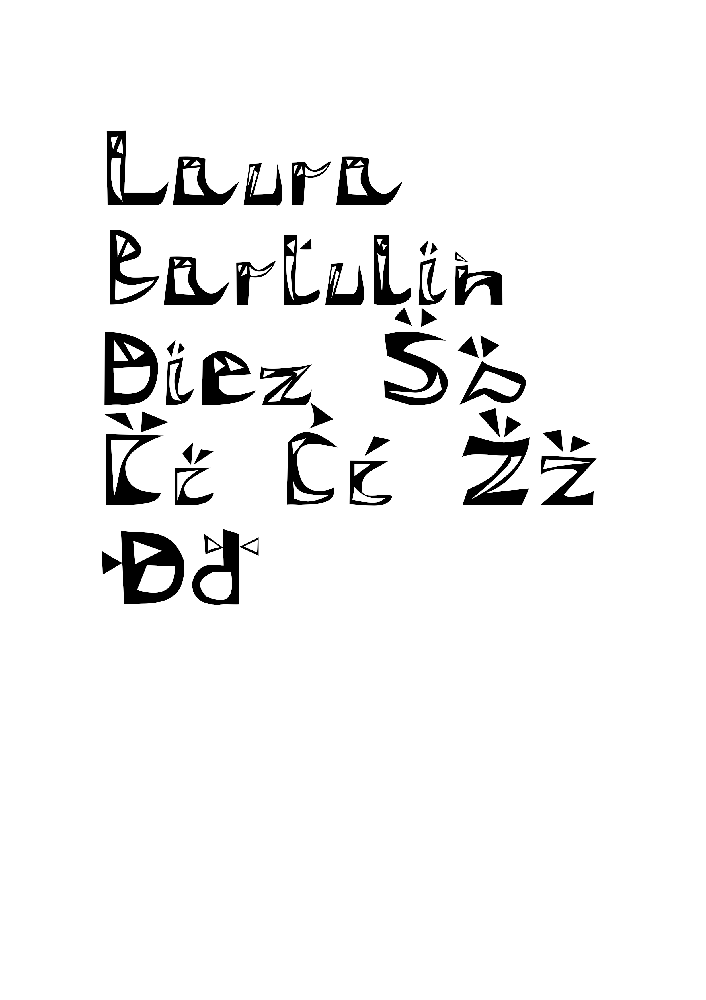A u drugoj da na taj font stavim crte koristeći blend.
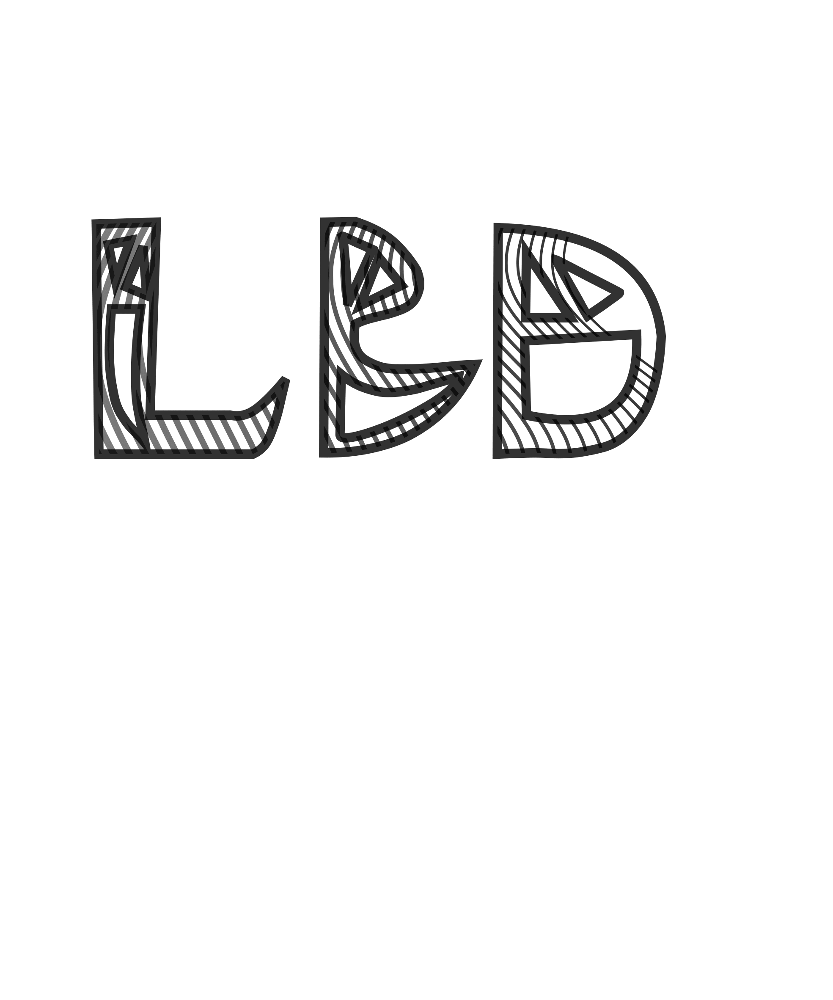Za treću sam u inkscape krivuljama radila cvijet po tutorialu i lisicu svoju.
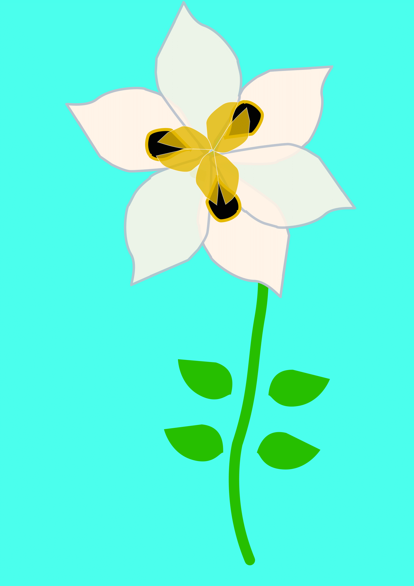 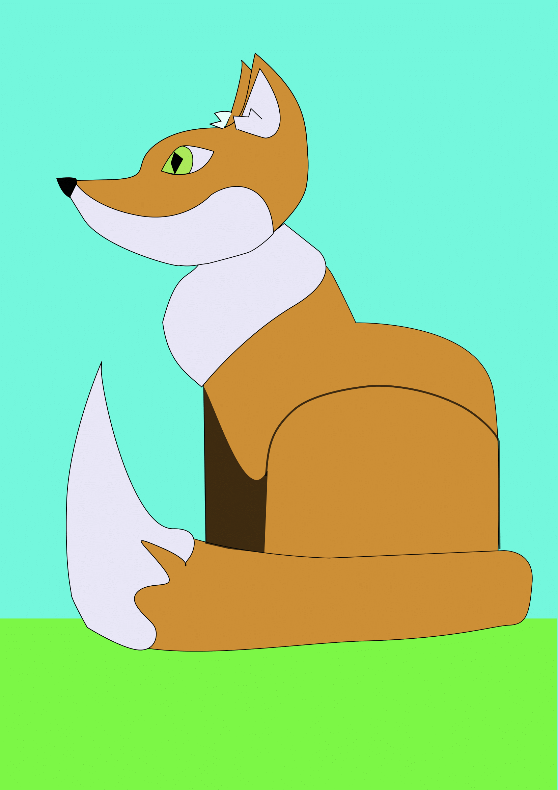Četvrta je bila tutorial čaša i proizvoljna tematika (u mom slučaju sunce)
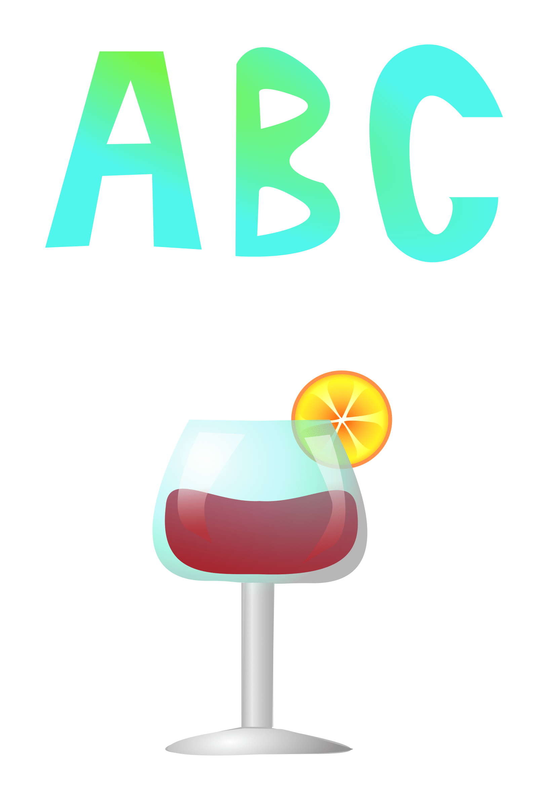 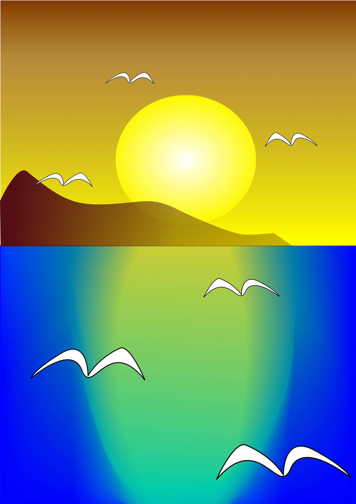Peta je bila retuširanje i healing.
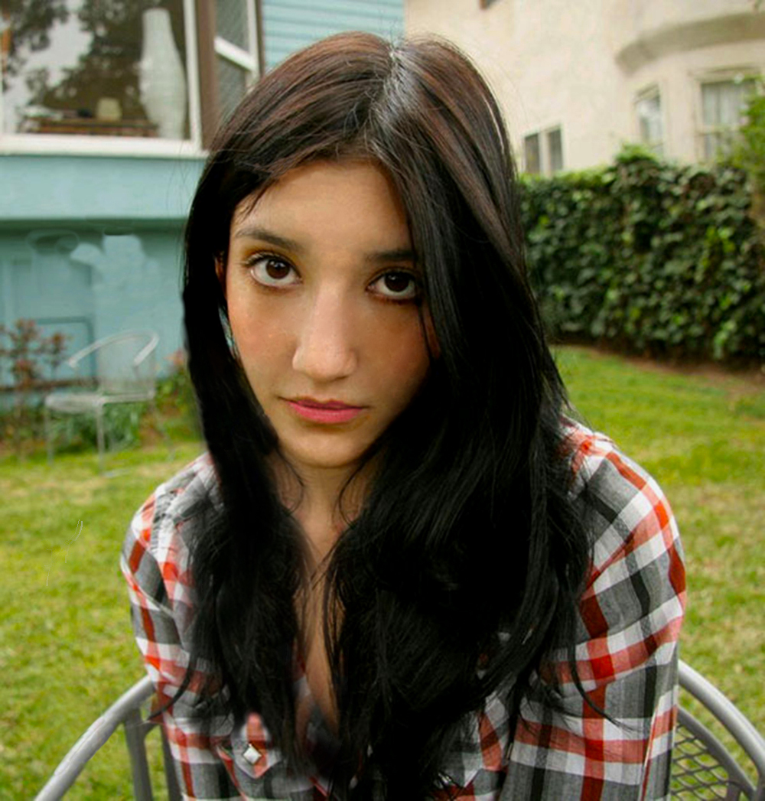 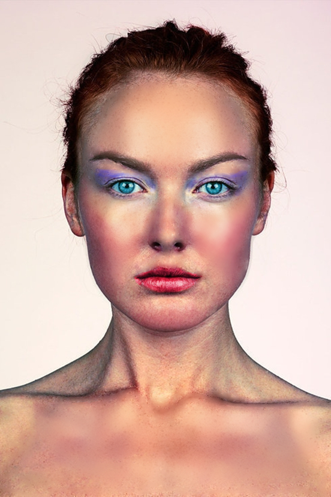Za šestu sam kolorirala.
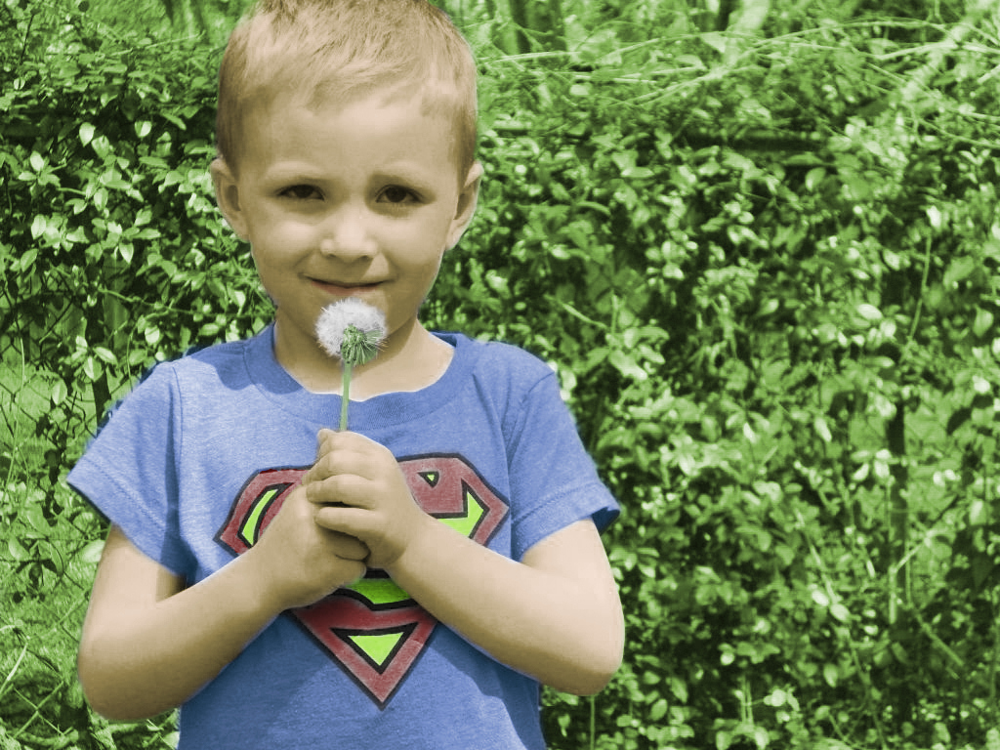 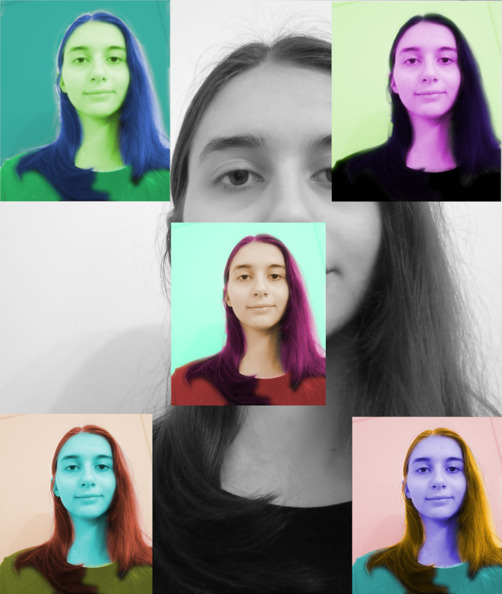U sedmoj je bila fotomontaža u kojoj sam drugoj slici nadodala 5 elementa više.
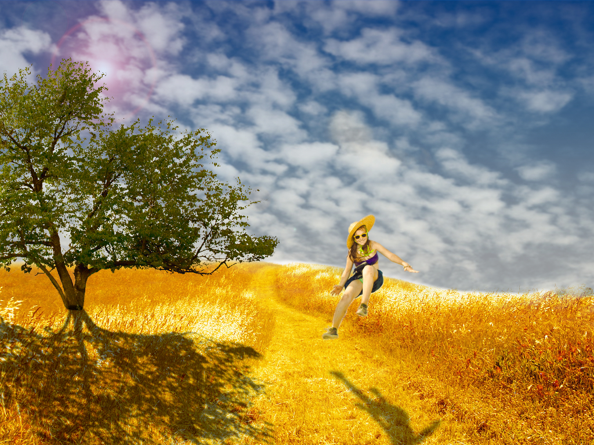 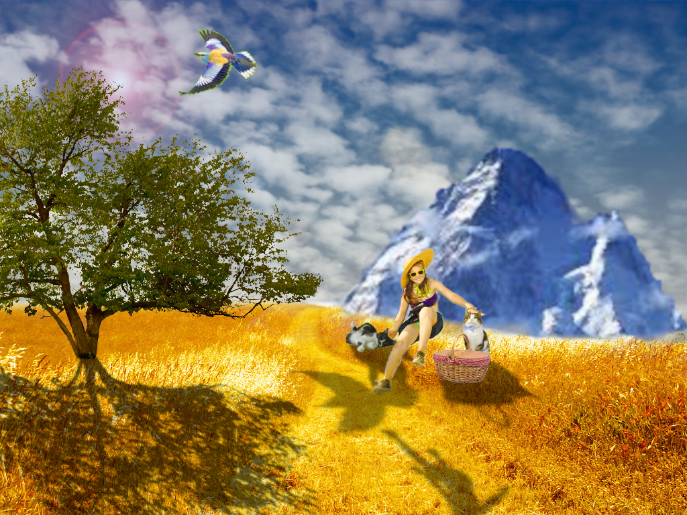Drugi projektni zadatak je bilo fotomontaža plus neke tehnike iz vježbi 5 i 6.
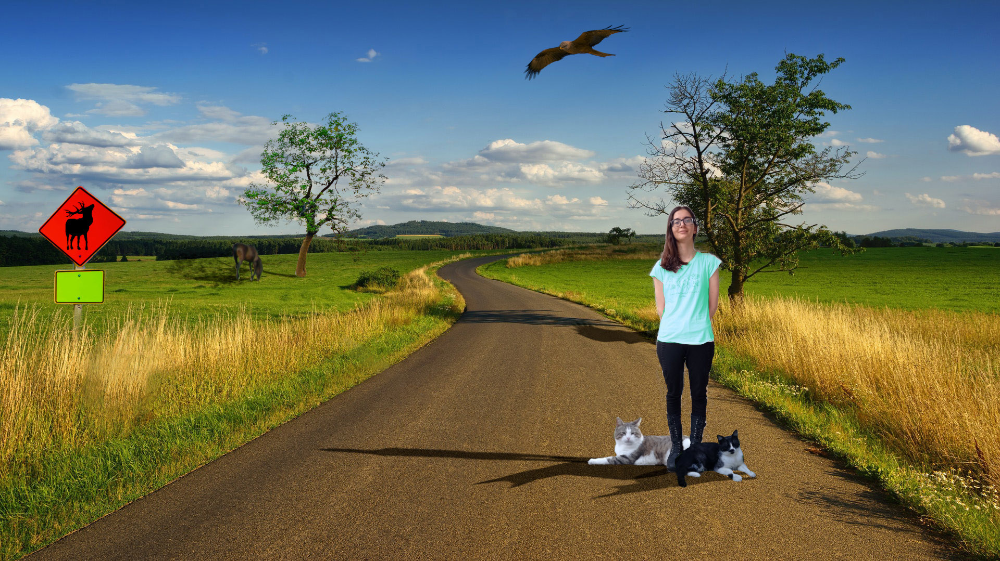Osma vježba je bila napraviti gif.


U devetoj sam napravila videje.
I zadnja, deseta je bila napraviti html stranicu.
10 vježba